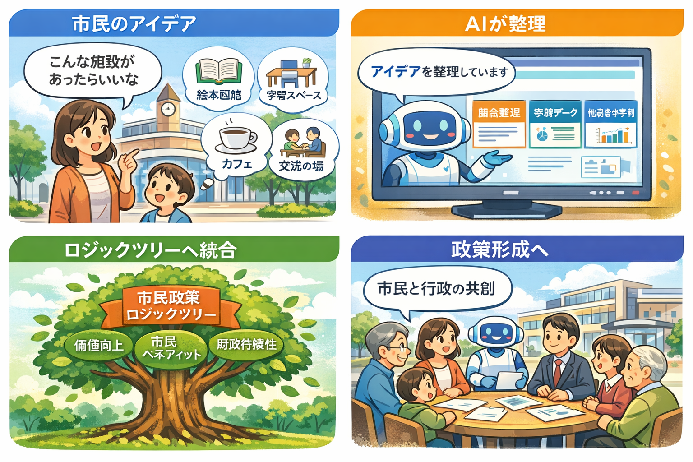

市民政策AIプラットフォーム
このプラットフォームについて
本システムは、市民が駅前公共施設のあり方について自由に意見を投稿し、 AIと共に整理・構造化しながら政策形成につなげる対話型プラットフォームです。
従来の行政意見提出には、 「表現の難しさ」 「他者の意見の不透明性」 「反映プロセスの不明確さ」 といった課題がありました。 本システムはそれらを解消し、 透明で継続的な市民参加を実現します。
特徴
- 思いついたままの投稿が可能
- AIが自動で要約・論点整理・構造化
- ロジックツリーによる政策構造の可視化
- 投稿・統合プロセスの透明化
- 市民参加型の継続的な改善サイクル

このような課題を感じていませんか？
- 考えはあるが文章化が難しい
- 否定されるのが不安
- 他の市民の意見が見えない
- 反映されないなら意味がないと思う
投稿の流れ
- 市民が自由投稿
- AIが整理・構造化
- ロジックツリーへ統合
- 政策形成へ反映
この仕組みの目的
どのような意見も素材として扱われ、 AIが中立的に整理し、 社会全体の知として統合します。
他の市民の意見や提案を見てみませんか？
投稿された意見はロジックツリー上で整理・統合されています。
🌳 市民政策ロジックツリー（Vision）
市民のウェルビーイングと知財の集積による投資型都市経営の実現
🤖 AI壁打ち
入力
⚖️ AI分析ルール
① 芦屋市の価値向上
- 他市からの集客促進
- 移住促進効果
- 推奨意向向上
② 市民ベネフィット
- 利用満足度
- リピート利用
- ウェルビーイング向上
③ 市民交流・イノベーション
- 多世代交流
- 学生交流
- 起業・事業創出
④ マルチユース性
- 多目的利用
- 時間帯活用
- 施設稼働率向上
⑤ 運営効率
- DX化
- 無人化
- ボランティア活用
- コスト削減
現在の配点
| 芦屋市の価値向上 | 25点 |
| 市民ベネフィット | 25点 |
| 交流・イノベーション | 20点 |
| マルチユース | 15点 |
| 運営効率 | 15点 |
AIの役割
AIは評価項目を決定しません。 AIは市民が定めたルールに従い、 提案の分類・採点・統合・シミュレーションを行います。
ルール変更プロセス
AI分析
↓
AI提言
↓
市民レビュー
↓
市民投票
↓
配点変更
↓
新ルール適用
📊 分析
価値向上
ベネフィット
交流
マルチユース
運営効率
ルール変更プロセス
AIは採点ルールを決定しません。 評価項目そのものは市民が定め、AIはそのルールに従って分析・統合を行います。
現時点では評価項目は固定とし、 各項目の配点（ウェイト）の変更提案を市民が行うことができます。
変更案はAIによる影響分析を行った後、 投票または合意形成プロセスを経て反映されます。
投稿は以下の評価軸に基づき、AIによって数値化・分析されます。 これらの基準は固定ではなく、市民合意により随時更新されます。
- 1. 芦屋市の価値向上
（他都市からの集客力・移住意欲・推奨意向の向上度） - 2. 市民ベネフィット
（利用満足度・リピート性・生活質の向上度） - 3. 市民交流・イノベーション
（世代間交流・協働・事業創出の可能性） - 4. マルチユース性
（施設の多目的活用・時間帯別利用最適化） - 5. 運営効率・持続可能性
（DX化・無人運営・ボランティア活用・コスト削減）
AIはこれらの項目を総合的にスコアリングし、投稿の統合・優先順位付け・政策化の補助を行います。
③ ルールの位置づけ
本システムの評価基準および統合ルールは、AIではなく市民によって決定されるものです。 AIはあくまで「ルールに従って処理・可視化する役割」に限定されます。
これにより、透明性の高い民主的な政策形成プロセスを実現します。
市民投稿一覧（PR統合対象）
📋 PULL REQUEST
市民提案一覧
市民から投稿された提案は、 GitHubのPULL REQUESTと同様に レビュー・統合・採択のプロセスを経て ロジックツリーへ反映されます。
📈 ビジョン・コンセプトの変遷
このページについて
芦屋駅前公共施設のあり方やコンセプトは、 固定された計画ではありません。
市民の皆様から寄せられた提案や議論を取り込みながら、 継続的にアップデートされていきます。
このページでは、 その変化の履歴と理由を可視化します。
初期ビジョン
公共施設を単なるコストセンターではなく、 市民価値を創出する投資型施設として再定義する。